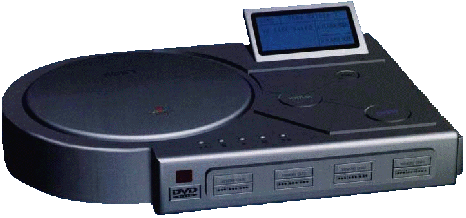
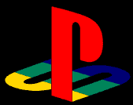
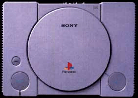

Tout savoir sur la Playstation2, les annonces officielles, les premières images, les spécifications techniques...
Depuis maintenant
deux mois, la Dreamcast est disponible sur l'archipel nippon, et dans quasiment
toutes les boutiques d'import du monde. Démontrant des capacités
techniques tout bonnement hallucinantes, elle renconre néanmoins
un premier accroc: la plupart des titres, parmi lesquels certains sont
très attendus, voient leur date de sortie repoussée. Passe
encore pour les retards de quelques jours qui, comme Sonic Adventure, valent
à peu près le coup d'être vécus; mais lorsqu'il
s'agit de plusieurs mois, à l'instar de blue stinger, pour ne citer
que lui, on est tout de même en droit de se rappeler que c'est en
partie a cause de ce genre de "défauts", que la saturn s'est ramassée.
En n'oubliant pas que cet échec s'était vu catalysé
par la présence sur le marché d'une machine aux capacités,
mais surtout au catalogue de jeux tout simplement monstrueux. La dreamcast,
seule console àç la technologie 128 bits à l'heure
actuelle, est-elle à l'abri de ce genre de mésaventure? Pour
environ un an, il semble bien que oui. Car, officiellement, la Playstation
a encore de beaux jours devant elle. Au moins jusqu'au prochain millénaire,
nous-a-ton confirmé de source sure. Il y a deux raisons à
celà: la play, bien installée dans les foyers et régnant
en maître absolu depuis maintenant plusieures années, offre
encore de beaux restes techniques pour une 32 bits.

Preuve en est, des jeux comme soul
reaver ou metal gear solid. Les développeurs connaîssent maintenant
la machine sur le bout des doigts et peuvent en tirer le meilleur parti
( ce qui n''est toujours pas le cas de certains, vous voyez sans doute
de quelle console à cartouche je parle), ce qui n'est pas peu dire.
Le deuxième motif justifiant cette attitude attentiste est directement
lié à la Dreamcast. En fait, Sony n'est nullement impressionné
par cette concurrente, ne la trouvant pas suffisamment révolutionnaire.
La réplique de sony à sega se fera donc attendre, n'en déplaise
aux véhicules de fausses infos, pour lesquels tous les fantasmes
sont permis. A commencer par les capacités techniques, que l'on
nous annonce avec une précision qui laisserait penser que le hardware
sort demain! Avec une capacité de gestion de 4 millions de polygones,
soit un million de plus que la cabane de sonic, la playstation 2 se placerait
un poil au dessus de la dream. Voilà qui tombe à pic pour
faire saliver les fans, et qui permet aux ragots de se développer
à vitesse grand V. Le mot DVD fait aussi partie de ces qualificatifs
qui désormais ne quittent plus les hypothèses bâties
autour de cette future 128 bits. Tiens, tant qu'on est dedans, certains
n'hésitent pas à avancer le chiffre aguicheur de 256 bits!
Pourquoi pas 2500 tant qu'on y est...

A propos du DVD, il semblerait que
ce soit une vraie fausse information, et que cette technologie ne soit
pas encore trop connue dans notre pays. Grace à un laser plus fin
et la possibilité de graver des informations sur deux couches superposées,
ce support offre une très grosse capacité de stockage
(sans oublier que l'on peut graver
sur deux faces)
Les aventures pourraient alors êtres
extrèmement longues et tenir sur un seul disque. Quant au séquences
vidéos, elles pourraient être d'un niveau inégalé.
Il reste que le prix des dvd vierges reste assez élevé (à
quel prix seraient les jeux??).
Et que le savoir faire concernant
la gravure s'améliore sans cesse, ce qui implique qu'elle n'est
pas pour l'instant bien maîtrisée. En continuant, si on se
fie à l'image du harware qui circule maintenant, il faut noter la
présence de deux logos très intéressants: DVD vidéo
tout d'abord, ce qui signifie que la consoles sera appelée à
lire des films, mais la technologie DVD dans ce cas est intéressante
à deux titres: la possibilité d'effectuer tout un tas de
paramètres, allant du format de l'image au choix de la langue, des
sous titres, et parfois des angles de caméras
(uniquement sur les films x pour
l'instant...). Sans télécommande, vous allez vous amuser.
On voit aussi le logo dolby Digital. Il s'agit de la nouvelle norme audio
qui succède au Dolby surround pro-logic. Connu sous diverses appelations(
Dolby Digital 5:1 ou AC-3), il est encore peu répandu chez nous
( hormis dans les salles de cinéma) mais se voit désormais
présent sur la quasi totalité ds films en DVD. Délivrant
le son sur cinq enceintes indépendantes + un caisson de basses,
il offre un son dynamique de grande qualité. Soit les installations
permettant de reproduire cette norme restent encore onéreuses, mais
celà devrait évoluer assez rapidement, et témoignerait
d'une réelle évolution de la part des constructeurs à
apporter une meilleure qualité sonore à la qualité
visuelle. Un point jusqu'à maintenant légèrement négligé,
et qui mériteraitque l'on s'y intéresse davantage.

Seulement voilà, l'image qui
présente ces deux sigles n'est rien d'autre qu'une création
graphique, et si on demandait à un infographiste, il pourrait bien
nous en inventer d'autres... On ne connaît donc pas encore l'aspect
physique de la consoles. Et même si on le connaîssait, il n'y
a qu'à voir les différentes évolutions qu'à
déja connu la Dreamcast avant d'avoir son design officiel! Du nom
non plus on ne sait rien. Logiquement, tout le monde s'est mis à
l'appeler Playstation 2, mais certains en ont profité pour colporter
la rumeur que sony aurait effectivement déposé ce nom, ainsi
que celui de la Playstation 2000.
Quand on sait que le hardware à
l'étude chez nintendo est baptisé ainsi, on se dit que les
colporteurs de nos jours, manquent d'imagination. Côté graphismes,
ces derniers s'amusent à parier sur la technologie 3DFX, basée
sur la nouvelle carte voodoo 3 , sega ayant opté pour le concurrent
direct en la personne du power VR.
D'autant que la voodoo 3 intégrerait
le mpeg 2, directement lié au DVD. Au jeu des déductions,
on a vite fait de tirer ses conclusions... Ainsi, parce qu'une personne
haut placée au japon dans le milieu des jeux vidéo a déclaré
que le lien internet proposé par la dreamcast était une option
intéressante, des magazines en ont déduit que la play 2 ne
le proposerait pas. D'un autre côté, le times magazine annonçait
que sony travaillait sur un projet permettant de raccorder la télé
à internet. Du coup, d'autres revues ont déclaré que
cet accessoire était destiné pour la Play 2. C'est oublier
l'existence des DomoTV, NetTV, Web pal et autres Web Tv, accessoires permettant
simplement à obtenir internet sur la TV. Sony, pas forcément
SCEE, peut très bien vouloir lancer son système, plus proche
du multimédia que du vidéoludique. Du côté des
jeu annoncés, c'est entre la franche rigolade et l'affabulation.
Des suites, le culot consistant à faire deux listes: une pour les
jeux confirmés, et une autre pour les plus fortes probabilités
: Tekken 4 (soit dit en passant, le développement a commencé,
et a été annoncé par namco pour l'arcade), Tomb raider
4, Crash bandicoot 4, Metal gear 2... Dans le genre, je peux aussi vous
livrer mes prédilections: Spyro 2, Final Fantasy 9, 10, 11 et 12,
Ridge racer 5, 6, et 7... Plus sérieusement, un jeu comme Tekken
4 n'est même pas encore sorti en arcade. Alors biensûr, la
suite de cette aventure a toutes les chances de se retrouver un jour sur
une consoles sony, mais laissez lui au moins le temps d'exister! Les seules
choses qui soient sûres actuellement, c'est que la Playstation en
a encore dans le ventre et qu'elle n'a pas fini retenir notre attention,
avec des jeux du calibre de Gran Turismo 2 (officiel), de nombreuses heures
de jeu vous attendent encore avant la sortie d'une éventuelle petite
soeur de la Playstation. Sony est, des trois constructeurs impliqués
dans la bataille des jeux vidéo, celui qui a su le mieux gérer
la sortie de sa bécane. Faisons leur confiance et parions que, quelle
que soit la date de sortie, ce sera la bonne date. Il faut seulement déplorer
que le Playstation Magazine anglais contribue à véhiculer
des rumeurs que les dirigeants de sony eux-mêmes démentent.
En reparlant du nom de la console,
on peut tou de même donner un avis, en visitant par hazard le web,
je suis tombé sur deux sites,
www.playstation2000.com
www.playstation2.com
qui, selon moi, sont deux noms de
domaines réservés par sony, mais rien n'est moin sûr...Wait
and see, l'avenir nous le dira.
Voilà! C'est à peu
près tout ce que je peux vous dire sur la Playstation 2!
|